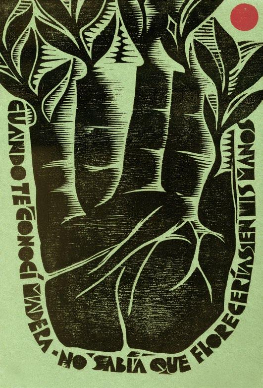

El Museo de Historia, Antropología y Arte, junto al Programa de Historia del Arte y el Programa de Bellas Artes de la Facultad de Humanidades de la Universidad de Puerto Rico, Recinto de Río Piedras, se complace en anunciar la apertura de la exposición La huella del papel: Xilografías de José A. Peláez, a partir del jueves 16 de abril, a las 11:30 a.m., en la Galería Francisco Oller, ubicada en el primer piso del edificio Luis Palés Matos (LPM) de la Facultad de Humanidades.

En la muestra se integran obras —así como los tacos o matrices de madera— que fueron donados por el artista para su resguardo en la colección de gráfica puertorriqueña del Museo. Considerando la larga trayectoria de Peláez como artista y como docente, la notable calidad estética de los grabados y el excelente estado de conservación de las matrices suscitaron tanto el entusiasmo como la necesidad de compartir estas piezas con el público.
Una conversación entre el medio y el resultado
La exposición presenta una cuidada selección de estas adquisiciones, donde el medio y el resultado final dialogan, invitando a reflexionar sobre ese espacio poético entre la madera y el papel. La huella del papel: Xilografías de José A. Peláez reúne treinta y tres xilografías, una serigrafía y una serie de tarjetas postales diseñadas para la Escuela de Comunicación Pública de la UPR-RP, así como obras realizadas por encargo.
Sobre el artista
José A. Peláez es artista gráfico, fotógrafo, diseñador, escritor y poeta. Reside en Puerto Rico desde 1961. Obtuvo una Maestría en Arquitectura de la Universidad de Puerto Rico en 1975. En 1980 abandonó la práctica de la arquitectura para dedicarse plenamente a la creación artística y al diseño gráfico.
Entre 1981 y 1985 trabajó como artista gráfico para Ediciones Huracán. Fue miembro fundador de la Hermandad de Artistas Gráficos de Puerto Rico y, desde 1985, ejerce de manera independiente bajo el nombre Arte sobre papel, desarrollando diseño y arte final para libros, catálogos de exposiciones, logotipos, invitaciones y otros materiales. Asimismo, se desempeñó como profesor de diseño gráfico en la Escuela de Comunicación de la UPR hasta el año 2012. Es autor de libros de poesía, cuentos, artículos y ensayos.
Visitar la exposición
La Galería estará abierta de 9:00 a.m. a 12:00 p.m. y de 1:30 a 4:00 p.m. los lunes, miércoles y viernes, y de 1:30 a 4:00 p.m. los martes y jueves. La exposición se extenderá hasta el 7 de mayo.
Para más información o reservaciones, llame al 787-763-3939. También puede escribir a galeriaoller.rrp@upr.edu.